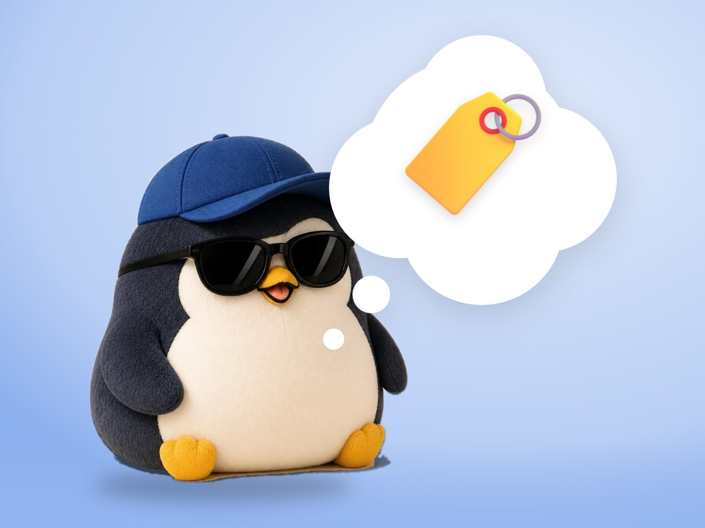

🧪 LAB · 試作 — AIが読書メモから一気に作った記事です。本番の一覧には出していません · 試作の一覧
🐧 EVERYDAY LIFE⚡ 44 SEC
A first impression becomes an adjective and changes how people see you later 🏷️

Sound Familiar
On the first day of a new class, were you ever nervous and could not smile well?
A Word Sticks
It is said that a first impression becomes like an "adjective" for that person.
This is because people see your later actions through that adjective.
Gloomy Start
If it is "gloomy" at first, even when you work hard, you look like a "gloomy nerd."
⚡ TRY IT
The adjective slot machine
Same penguin. Same actions. Only the first impression is different.
STEP 1 · FIRST IMPRESSION
🏷️ PEOPLE CALL YOU:
Pick STEP 1, then STEP 2 ⬇️
"a gloomy nerd" 😓
"trying too hard" 😬
"gloomy, but… nice, maybe?" 🤔
"a cheerful hard worker" ✨
"so fun to be with" 🎉
"kind and bright" 🌟
STEP 2 · DO THE SAME THING
🎉 Same actions, different adjectives! The first impression wins.
Bright Start
If it is "bright" at first, the same actions make you look like "a cheerful hard worker."
Three Keys
They say the keys are looking clean, your face, and the tone of your voice.
For example, fix your clothes and talk with a small smile.
Try This
Next time you meet someone new, first try to greet them with a smile and a bright voice.
The first few seconds change a lot how people see you later.
📚 I wrote this from my reading notes.